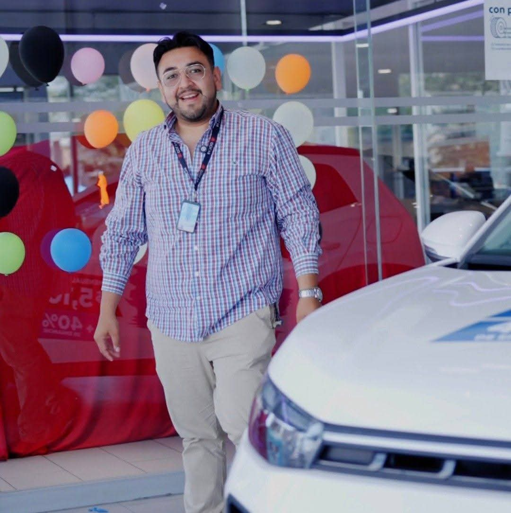

VOLKSWAGEN Y SEAT NUEVOS
Tu próximo
auto
nuevo.
Empieza con un auto que va contigo.
Encuéntralo con atención personal, de principio a fin.
Volkswagen y SEAT
Nuevos en León
ELIGE EL QUE VA CONTIGO
Tu próximo auto nuevo.
De tu primer auto a tu siguiente gran aventura. Cambia el color, elige la versión y compara hasta tres.
Disponibilidad por confirmar. Imágenes de referencia; algunos tonos son aproximados.
DA EL SIGUIENTE PASO
Tomamos tu auto
a cuenta.
Tu auto actual puede ser el comienzo del siguiente.
Cuéntame qué manejas y agenda una valuación.

ANDRÉS OROZCO / TU ASESOREL AUTO IMPORTA. EL TRATO TAMBIÉN.
Una decisión grande.
Una atención cercana.
Soy Andrés Esau Orozco Castro. Te acompaño a encontrar un auto nuevo que se adapte a lo que buscas, comparando opciones y resolviendo tus dudas de forma directa.
VEN A CONOCER TU PRÓXIMO AUTO
Nos vemos
en León.
Gocar Seminuevos · León Motors
Blvd. Adolfo López Mateos 2004Col. Peñitas, C.P. 37180
León, Guanajuato
Agenda tu visita con Andrés y confirma
la ubicación de la unidad que quieres conocer.
TU SIGUIENTE AUTO ESTÁ MÁS CERCA